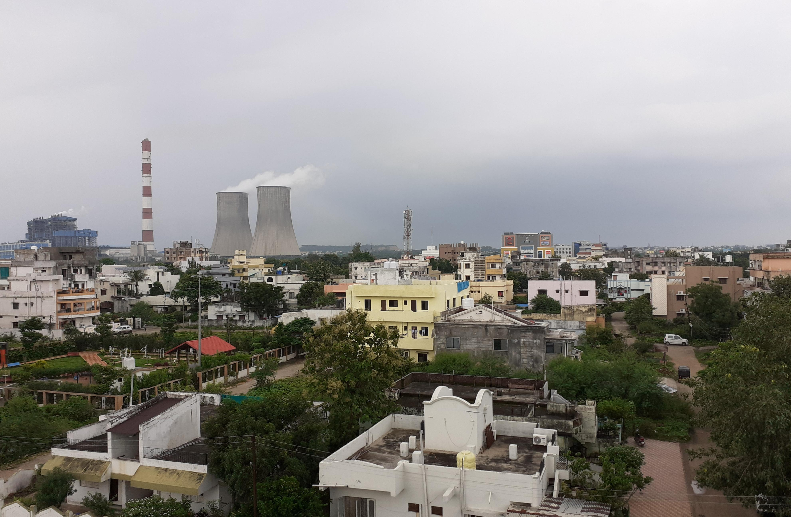
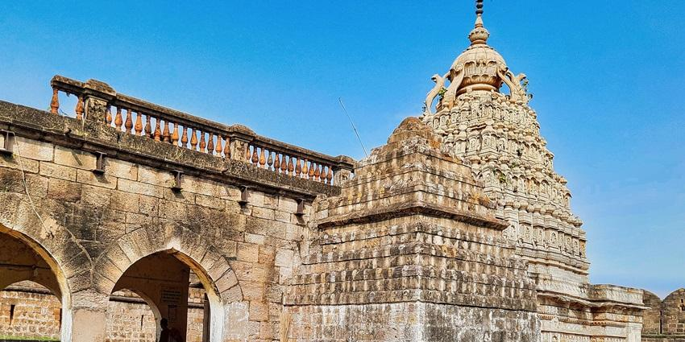
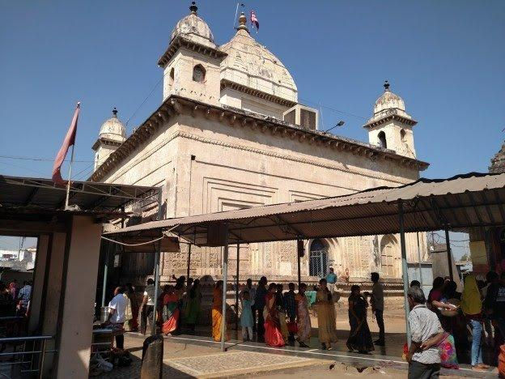
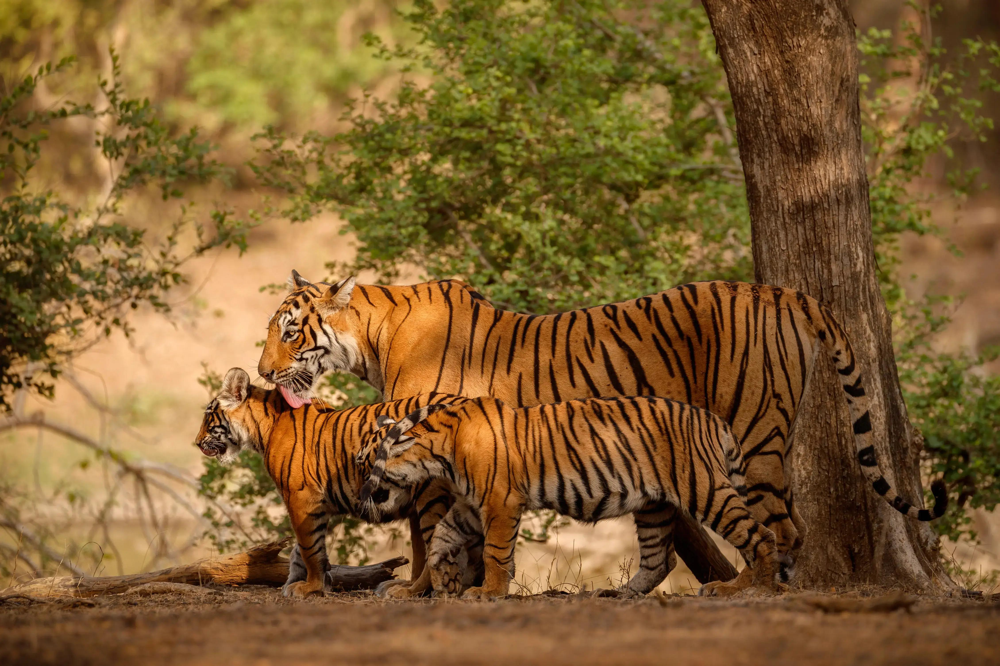
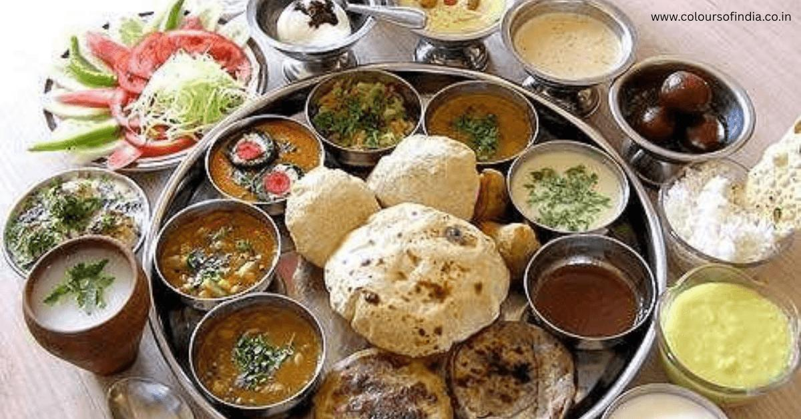
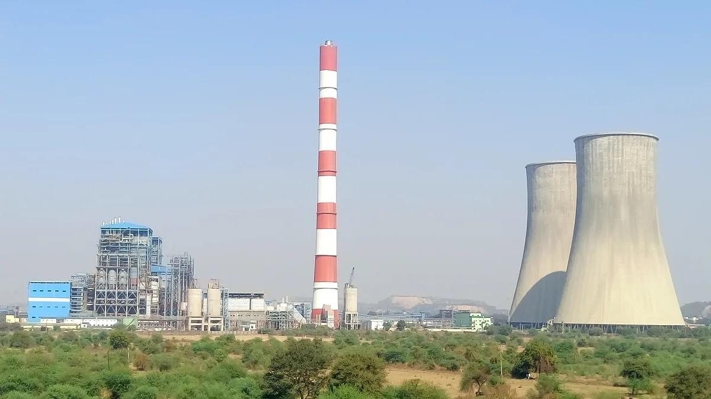
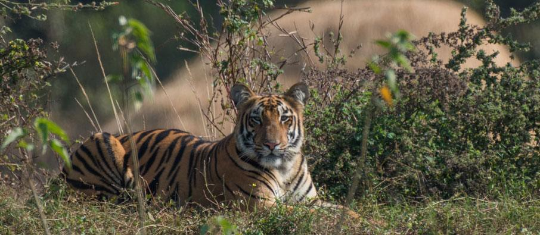
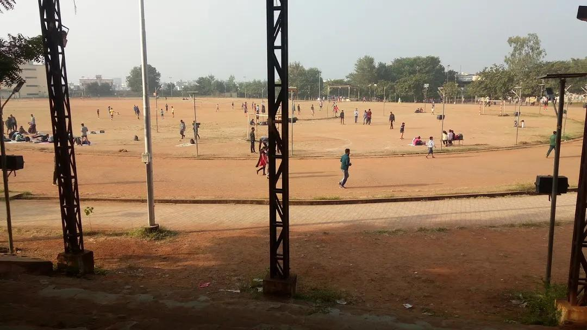

About

Located in eastern Maharashtra on the Deccan Plateau, Chandrapur lies at the confluence of the Erai and Zarpat rivers. It acts as the primary gateway to the renowned Tadoba Andhari Tiger Reserve. Spanning a diverse landscape of dense forests and industrial sectors, the city preserves its contrasting, welcoming environment with a growing population of over 350,000 residents.
- Location:Eastern Maharashtra, India, sitting right at the confluence of the Erai and Zarpat rivers.
- Famous as:The "City of Black Gold" for its massive coal mines, and the prime gateway to the Tadoba Andhari Tiger Reserve.
History

Established in the 13th century by the Gond ruler Khandkya Ballal Sah, the city was originally fortified in the 15th century. The region was historically known as "Lokapura" and then "Chanda" during the British colonial period before reverting to its original name, Chandrapur, in 1964. After being ruled by Hindu, Buddhist, and Gond kings, it came under Maratha rule and was ultimately annexed by the British in 1853.
- The Gond king Khandkya Ballal Sah founded Chandrapur in the 13th century. He built a great fort there with massive stone walls. Later, Maratha rulers took over the city. Finally, the British took control in 1853. The city got its current name back in 1964.
Culture

The district's culture is a vibrant fusion of indigenous traditions and deep-rooted spiritual history. Major religious sites like the Mahakali Temple draw massive crowds of devotees. The region is celebrated for its rich tribal heritage, with communities performing spectacular folk dances like Dandar, Gondi, and Rela, and widely celebrating festivals such as Dussehra and Diwali.
- Main Festivals:Dussehra, Diwali, and the grand annual fair at the Mahakali Temple.
- Traditional Arts:Gondi and Rela folk dances, tribal bamboo crafts, and Dandar theater.
- Language:Marathi is the main language, along with Hindi and the tribal Gondi language.
Tourism

Chandrapur serves as a major tourist anchor for central India, most notably as the base for exploring the Tadoba Andhari Tiger Reserve. Tourists are also drawn to the ancient Gond Fort gates, the historic Achaleshwar Temple, and the Bhadravati Jain and Buddhist rock-cut caves.
- Tadoba Andhari Tiger Reserve: This is Maharashtra's oldest and largest national park. It is highly famous for its large number of Bengal tigers, leopards, and over 300 types of birds. Visitors love taking open jeep safaris here to spot wildlife in the dense forests.
- Chanda Fort (Gond Fort): Built by Gond kings in the 13th to 15th centuries, this historic landmark sits right in the middle of the city. It features massive stone walls, ancient bastions, and famous historic gates like the Jatpura Gate.
- Shri Mata Mahakali Temple: This is a highly revered 16th-century temple built by the Gond dynasty on the banks of the Zarpat River. It serves as a major icon of the city, featuring a unique underground tunnel that devotees walk through to see a reclining idol of the goddess.
Famous Food

The local cuisine leans toward hearty, traditional Vidarbha flavors. Staples include spicy curries made with river fish, Jowar and Bajra rotis, and the fiery, peanut-and-garlic-based thecha (chutney). Traditional sweets like Puran Poli are frequently prepared during local festivals, and street foods reflecting the region's mixed demographic are readily available.
- Famous Food:Saoji and Varhadi curries, which are spicy dishes made with chicken, mutton, or river fish, eaten with hot jowar bhakri (flatbread).
- Local Specialty:Tarri Poha, a breakfast of flattened rice flakes topped with a fiery, spicy chickpea gravy, and chana poha served with raw onions.
Economy

As Maharashtra's "City of Black Gold," the district's economy is highly industrialized. It is anchored by the Western Coalfields Limited (WCL), the Chandrapur Super Thermal Power Station (CSTPS), and the Ballarpur Industries Limited (BILT) paper mill. Additionally, it houses the highest concentration of cement factories in the state.
- Key Industries:Coal mining by Western Coalfields Limited, the massive Chandrapur Super Thermal Power Station, and large-scale cement and paper factories.
- Main Crops:Rice (Paddy), cotton, soybeans, and pulses like pigeon peas (tur dal), grown widely across the fertile rural lands.
Environment

The environment features a mix of tropical deciduous forests, dominated by teak and bamboo, alongside highly rugged, hilly terrains. It is famously home to a thriving and growing population of tigers. However, rapid industrial expansion and habitat fragmentation have led to significant man-animal conflicts and conservation challenges for local farming communities.
- Climate:Very hot summers with temperatures crossing 45°C (113°F), a wet rainy season from June to September, and mild, pleasant winters.
- Key Rivers:The Wardha, Wainganga, Erai, and Zarpat rivers flow through the district and provide vital water.
- Protected Areas:The world-famous Tadoba Andhari Tiger Reserve protects the region's rich wildlife, dense forests, and native tigers.
Sports

Recreational sports, particularly cricket, hold massive popularity across local grounds and maidans. The district administration actively promotes traditional sports, athletics, and wrestling (kushti) through rural youth programs. Facilities and tournaments organized by the district sports council encourage local participation and athletic development.
- Traditional Sports:Kushti (wrestling), kabaddi, and kho-kho are deeply popular across local villages and schools.
- Focus:Rural youth programs, fitness, and athletic talent hunts run by the district sports council to build state-level players.